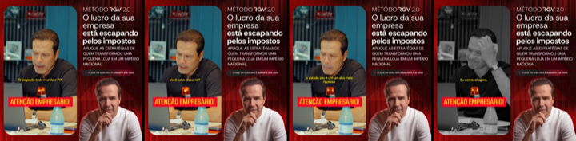
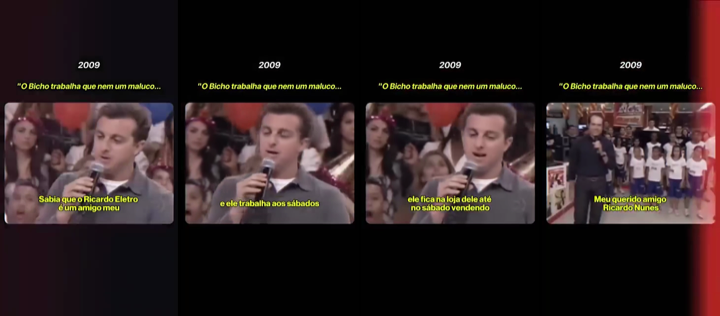

O que o dash mostra, o que os concorrentes estão rodando e o que produzir na semana pro público da imersão: dono de empresa que fatura acima de R$ 200 mil por mês.
Custo por lead no perfil · 30 diasR$ 3122.365 no perfil de 8.110 leads (29.2%)
SQL · 30 dias192R$ 3.847 por SQL
Agendamentos realizados · 30 dias805 vendas no período
Últimos 7 diasR$ 317/MQL538 no perfil · 25 SQL · 8 ag.
Venda demora a fechar, então o número ainda é pequeno. Use junto com SQL e agendamento.
Menos de 25% dos leads no perfil. O custo por lead parece ótimo e engana.
Gastou R$ 3 mil ou mais em 30 dias, não gerou SQL, e o lead no perfil saiu caro ou nem saiu.
Os vídeos com mais leads e melhor custo no dash, baixados e transcritos. A ideia é manter o miolo que converte e testar aberturas, tarjas e ajustes novos.
1[RGV][PER][VD][AD01][18082026]30 dias: 59% dos leads no perfil, o maior entre os grandes · 105 MQL a R$ 320 · 19 SQL · 12 agendamentos realizados, o campeão · 7 dias: 52% no perfil, 4 SQL e 3 agendamentos, segue o 1º em agendamento · ver o vídeo

O que é: Montagem com cara de página: à esquerda o Ricardo no notebook com a faixa vermelha 'ATENÇÃO EMPRESÁRIO!'; à direita 'O lucro da sua empresa está escapando pelos impostos', com a foto dele. Fala de Pix, malha fiscal e de um empresário que levou multa de R$ 20 milhões. Depois diz 'é para aquele empresário que fatura acima de 1 milhão de reais' e fecha com 'vai conversar com um especialista, que vai fazer um diagnóstico e ver se você está preparado'.
Por que funciona: Junta o tema que mais prende, imposto, com o filtro de faturamento falado e um CTA de diagnóstico. Quem chega já sabe que é pra dono de empresa grande, e por isso 59% estão no perfil.
Novas aberturas faladas
- “Tem empresário aqui que levou multa de 20 milhões. 25 anos de trabalho, perdeu tudo.”
- “O Pix que cai no seu CNPJ já está sendo cruzado pela Receita. Você sabe disso?”
- “Se a sua empresa fatura mais de 1 milhão por ano, o lucro pode estar escapando pelo imposto agora.”
- “Antes de pagar o próximo imposto, presta atenção nesse vídeo.”
Novas tarjas
ATENÇÃO EMPRESÁRIO!MULTA DE R$ 20 MILHÕESO LUCRO ESTÁ ESCAPANDO PELO IMPOSTO
O que mudar
- Manter a montagem de página e o trecho 'é para empresário que fatura acima de 1 milhão', que é o filtro que faz o perfil subir.
- Trocar só a abertura, uma por versão. A da multa de 20 milhões é a candidata mais forte.
- Aplicar o mesmo fecho, com filtro de faturamento e diagnóstico, nos vídeos de notícia tributária, que hoje têm só 14% no perfil.
2Reels 430 dias: 36% no perfil · 102 MQL a R$ 431 · 18 SQL · 11 agendamentos realizados · ver o vídeo

O que é: Abre com um trecho de TV de 2009 em que o Luciano Huck fala do Ricardo: 'o bicho trabalha que nem um maluco, até no sábado'. Depois o Ricardo explica os 3 dias do RGV, gestão, marketing e venda, com 40 horas e a regra 'proibido perder venda'.
Por que funciona: A prova social vem de fora, de alguém famoso e de outra época, e o empresário confia mais nisso do que no Ricardo falando de si. O miolo explica com clareza o que se leva dos 3 dias.
Novas aberturas faladas
- “Em 2009, o Luciano Huck falou isso de mim na TV.”
- “Antes de ter 1.100 lojas, eu trabalhava até no sábado vendendo.”
- “O que um apresentador de TV contou sobre o dono da Ricardo Eletro.”
Novas tarjas
2009: "O BICHO TRABALHA QUE NEM UM MALUCO"O DONO QUE VENDIA ATÉ NO SÁBADO
O que mudar
- Testar outros trechos de arquivo de TV e jornal da época da Ricardo Eletro como abertura, no mesmo molde.
- Pôr o filtro de faturamento antes da explicação dos 3 dias, como no AD01.
- Fazer uma versão curta, com só a abertura de arquivo e o miolo dos 3 dias, pra ver se o custo por MQL cai.
3[RGV][PER][VD][ORG][FEED][AD06][09102025]30 dias: 2.891 leads a R$ 42, mas só 20% no perfil · 589 MQL a R$ 204 · 33 SQL · 9 agendamentos · 0 vendas · gancho 3s de 20,1% em 30 dias e 22,8% em 7 no dash · 7 dias no funil: 30% no perfil, R$ 152 por MQL, 7 SQL e 2 agendamentos · ver o vídeo

O que é: O vídeo principal. Narrado com fotos do Abílio Diniz, da Luiza Trajano e do João Adibe: 'já pensou se você pudesse ser mentorado...?'. Depois apresenta o Ricardo com os números da Ricardo Eletro e o Ricardo explica os 3 dias.
Por que funciona: O miolo vende muito bem: autoridade com número e explicação clara dos 3 dias. O problema é a entrada, com foto parada e legenda pequena. Só 1 em 5 passa dos 3 segundos, então qualquer ganho na abertura multiplica o resultado.
Novas aberturas faladas
- “Só um bilionário do Brasil abre a porta da empresa dele pra você. E não é quem você tá pensando.”
- “1.100 lojas, 12 bilhões por ano, 45 mil funcionários. Agora imagina ter esse cara sentado do seu lado por 3 dias.”
- “Se a sua empresa fatura mais de 200 mil por mês e você ainda decide tudo sozinho, para 1 minuto.”
- “O Abílio não pode mais te mentorar. A Luiza não tem tempo. Mas tem um que tem.”
- “Você pagaria pra sentar 3 dias com o fundador da Ricardo Eletro?”
Novas tarjas
QUEM VAI TE MENTORAR?1.100 LOJAS · R$ 12 BILHÕES POR ANOSÓ UM BILIONÁRIO ABRE A PORTA PRA VOCÊ3 DIAS COM O FUNDADOR DA RICARDO ELETRO
O que mudar
- Pôr filtro de faturamento na abertura ou na tarja, porque hoje a maioria dos leads está fora do perfil.
- Pôr tarja grande no primeiro quadro, por cima da foto do Abílio. Hoje não tem tarja.
- Testar começar pelo trecho 'Só um. Ricardo Nunes' com os números, e deixar os outros empresários pra depois.
4[RGV][PER][VD][AD11][12082026]30 dias: 37% no perfil · 61 MQL a R$ 524 · 12 SQL · 7 agendamentos · 1 venda · ver o vídeo

O que é: Corte de podcast com a faixa vermelha 'LOJA FÍSICA VAI ACABAR?' e imagem de uma loja da Ricardo Eletro. Ele conta de uma loja de shopping que caiu de 4 milhões pra 1 milhão por mês e o aluguel virou 15% do faturamento. Depois se apresenta, de lojinha de 20 m² a 1.100 lojas e 12 bilhões, vendida em 2018, e usa o mesmo fecho do AD01, com filtro de faturamento e diagnóstico.
Por que funciona: O caso de varejo com número real prende o dono de loja, e a história de 20 m² a 1.100 lojas dá autoridade. A planilha mandava evitar esse vídeo pelo custo por lead, mas no funil ele gera SQL, agendamento e venda.
Novas aberturas faladas
- “A Magalu vai ficar com 7 bilhões que eram da Casas Bahia. Eu disputei cliente com as duas. Deixa eu te contar o que acontece com a loja do meio.”
- “Uma loja que vendia 4 milhões por mês passou a vender 1 milhão. E o aluguel ficou o mesmo.”
- “Quando o aluguel vira 15% do faturamento, a loja já está morrendo.”
- “Eu saí de uma loja de 20 metros quadrados pra 1.100 lojas. Vou te contar o erro que quase ninguém vê.”
Novas tarjas
A MAGALU VAI FICAR COM R$ 7 BI DA CASAS BAHIALOJA FÍSICA VAI ACABAR?O ALUGUEL VIROU 15% DO FATURAMENTODE 20 M² A 1.100 LOJAS
O que mudar
- Tirar da lista do que evitar na planilha: é um dos que mais geram agendamento e venda.
- Testar outros casos de varejo com número na mesma estrutura: pergunta polêmica na faixa e caso real.
- Manter o fecho com filtro de faturamento e diagnóstico.
5[RGV][PER][VD][FEED][AD36][02042026]30 dias: 36% no perfil · 222 MQL a R$ 130 · 18 SQL · 5 agendamentos · pausado · gancho 3s de 28% no dash · ver o vídeo

O que é: Selfie do Ricardo ao ar livre, sem produção, em tom de bronca: 'Você tá no regime simples? Pelo amor de Deus, empresário, presta atenção'. Mostra um papel de incentivo fiscal e fecha com 'para de ser amador'.
Por que funciona: Tom de recado sincero e uma dor de bolso clara. Está pausado com um dos melhores custos da conta, então vale reativar e fazer versões novas.
Novas aberturas faladas
- “Tá no Simples e fatura mais de 100 mil por mês? Você pode estar pagando imposto demais. Presta atenção.”
- “Empresário, olha esse papel aqui. Tem benefício fiscal no seu estado que ninguém te contou.”
- “Eu tinha loja nos 27 estados. Sei exatamente onde você tá perdendo dinheiro com imposto.”
- “Pelo amor de Deus, para de pagar imposto sobre faturamento se você ganha sobre lucro.”
- “Sabe quanto do seu faturamento vai pro governo todo mês? Faz a conta comigo.”
Novas tarjas
VOCÊ ESTÁ PAGANDO IMPOSTO DEMAIS?SIMPLES + R$ 100 MIL/MÊS = PREJUÍZOPARE DE SER AMADOR COM IMPOSTOO BENEFÍCIO FISCAL QUE NINGUÉM TE CONTOU
O que mudar
- Reativar o original enquanto as versões novas não ficam prontas.
- Abrir mostrando o papel do incentivo fiscal na cara da câmera, como prova visual.
- Gravar selfies curtas em lugares diferentes, como carro, loja e escritório, com a mesma bronca e uma tarja vermelha no topo.
6[RGV][PER][VD][AD29][12062026]30 dias: 39% no perfil · 57 MQL a R$ 392 · 10 SQL · 4 agendamentos · 7 dias: 47% no perfil, 2 SQL · versão de formulário no dash: R$ 5.279 em 7 dias, CPL R$ 440, gancho 14,5%, ainda ativa · ver o vídeo

O que é: O Ricardo na sala vazia do RGV, com luz vermelha e a tarja 'EMPRESÁRIO': 'eu vou ser claro, se você não estiver sentado numa dessas cadeiras, imagina se o seu concorrente estiver'. Bate nas 'mentorias de coach' e lista os problemas reais: cliente, marketing, imposto, fiscal e caixa. Fecha com 'sua cadeira está aqui reservada, a decisão é sua'.
Por que funciona: O medo de ficar pra trás do concorrente, num cenário real do evento, mais a crítica aos coaches. Curto, com 55 segundos, e direto.
Novas aberturas faladas
- “Imagina o seu concorrente sentado nessa cadeira por 3 dias. E você não.”
- “Essa cadeira está reservada pra você. A decisão é sua.”
- “Eu vou ser claro com você, empresário.”
Novas tarjas
EMPRESÁRIO, EU VOU SER CLAROE SE O SEU CONCORRENTE SENTAR AQUI?SUA CADEIRA ESTÁ RESERVADA
O que mudar
- Cortar a versão de formulário, que segue ativa no dash de reserva: R$ 5.279 em 7 dias, CPL de R$ 440 e gancho de 14,5%. Manter a de página, que tem 47% no perfil.
- Gravar versões na sala cheia, durante o evento, mantendo a mesma fala e com o filtro de faturamento na segunda frase.
- Testar abrir na cadeira vazia com a tarja 'E SE O SEU CONCORRENTE SENTAR AQUI?', pra subir o gancho.
7[RGV][PER][VD][FEED][AD48][02042026]30 dias: 38% no perfil · 116 MQL a R$ 122, o melhor custo entre os vídeos · 8 SQL · 2 agendamentos · pausado · gancho 3s de 31,4% no dash · ver o vídeo

O que é: Cena de mesa: o Ricardo conversa com um empresário e pega uma nota de 100: 'Vou rasgar essa nota. Você tem coragem?'. Explica que no Simples acima de R$ 100 mil o empresário paga sobre faturamento e não sobre lucro. Fecha com 'tem que ver se vai aprovar você'.
Por que funciona: Tem ação visual no primeiro quadro, a nota de 100, e uma metáfora fácil: deixar pra depois é rasgar dinheiro todo mês. A seleção no fim dá exclusividade.
Novas aberturas faladas
- “Você rasgaria uma nota de 100 agora? Então para de fazer isso todo mês no Simples.”
- “Toda vez que você paga imposto sobre faturamento, você faz isso aqui.”
- “Quanto você fatura? 400 mil? Então você tá rasgando dinheiro.”
- “Deixar o RGV pra depois custa isso aqui todo mês.”
Novas tarjas
VOCÊ RASGA R$ 100 TODO MÊS?SIMPLES ACIMA DE R$ 100 MIL = DINHEIRO RASGADODEIXAR PRA DEPOIS CUSTA CARO
O que mudar
- Reativar o original, que está pausado com R$ 46 por lead.
- Começar o vídeo já com a nota sendo rasgada, sem a fala antes.
- Fazer uma versão com uma pilha de notas, uma para cada mês do ano, pra mostrar o tamanho da perda.
Linha 001 · Notícia que mexe no bolso do empresário · 3 vídeos pra 22/10 (manchetes de 14/10)
Faixa vermelha com a manchete nos 3 primeiros segundos, legenda embutida, Ricardo em corte de palco ou falando pra câmera, e fecho 'é isso que a gente resolve em 3 dias, de empresário para empresário'. Sempre ligar o imposto ao método, nunca manchete solta. Tamanhos 1080x1920, 1080x1350 e 1080x1080. Toda abertura leva o filtro na primeira frase ('se a sua empresa fatura mais de R$ 200 mil por mês'), porque sem filtro o 'pego na reforma' fica em 14% no perfil. Mandar pra página, não pro formulário. A entrega do Simples regular ou híbrido (de 13/10) segue válida até 30/10. Split payment fica fora: virou briga de governo no noticiário.
1
A Magalu vai ficar com R$ 7 bi da crise da Casas Bahia
Faixa vermelha: 'A MAGALU VAI FICAR COM R$ 7 BI DA CASAS BAHIA'. Fala: 'Se a sua empresa fatura mais de 200 mil por mês, presta atenção: quando o gigante cai, o cliente dele vai pra alguém.'
Formato: Tela dividida: em cima a manchete do Valor com as duas marcas, embaixo o Ricardo no palco. A faixa vermelha corta a divisão.
Roteiro:
- 0 a 3s · Faixa com a manchete e o Ricardo, já com o filtro de faturamento.
- 3 a 18s · O fato: a Magazine Luiza estima ficar com R$ 7 bilhões em vendas da crise da Casas Bahia, e R$ 11 bi contando os marketplaces estrangeiros (Valor). A Casas Bahia, em recuperação judicial, já leva ação de despejo por aluguel atrasado (Seu Dinheiro).
- 18 a 35s · A consequência pro dono: crise de concorrente é a hora em que o mercado se redistribui. Quem tem oferta, time e caixa pega o cliente. Quem não tem, perde junto. 'Eu disputei cliente com as duas por décadas.'
- 35 a 45s · Ponte: 'é isso que a gente resolve em 3 dias, de empresário para empresário.' CTA pra página.
Prova social: React da Casas Bahia de 11/10 com 117 mil (6,88x a mediana) e o de 2024 com 1,67 milhão. A autoridade de fundador da Ricardo Eletro, concorrente das duas.
Variações pra testar:
- Com filtro de faturamento na primeira frase
- Abertura só com a pergunta: 'Pra onde vai o cliente da Casas Bahia?'
- Ricardo na frente de uma loja de eletro, sem palco
- Versão horizontal pro YouTube, linha 008
Baseado em: Notícia · Valor Econômico
2
A reforma muda o seu fluxo de caixa em janeiro
Faixa vermelha: 'A REFORMA MEXE NO SEU CAIXA EM JANEIRO'. Fala: 'Se a sua empresa fatura mais de 200 mil por mês, o dia em que o imposto sai do seu caixa vai mudar.'
Formato: Corte de palco com faixa vermelha e um calendário simples: dezembro e janeiro lado a lado, com a seta do dinheiro.
Roteiro:
- 0 a 3s · Faixa e o Ricardo com o filtro de faturamento.
- 3 a 18s · O dado: a reforma exige adaptação e muda o fluxo de caixa das empresas, com novidades a partir de janeiro de 2027 (Correio Braziliense). 86% das notas das empresas obrigadas já destacam a CBS (Fenacon): a mudança já está na nota.
- 18 a 35s · O que muda pro dono: quem olha só o faturamento vai sentir o caixa apertar sem entender por quê. Capital de giro precisa ser refeito antes de janeiro.
- 35 a 45s · Ponte pro RGV e CTA pra página.
Prova social: Reforma tributária é dos temas que mais rendem em react no perfil. Se tiver, print de aluno que refez o fluxo de caixa depois do RGV.
Variações pra testar:
- Com filtro de faturamento na primeira frase
- Abertura com pergunta: 'Você sabe quanto vai ter no caixa em fevereiro?'
- Tela dividida com a manchete do Correio Braziliense em cima
- Quadro branco com o Ricardo desenhando 'vendi' e 'entrou'
Baseado em: Notícia · Correio Braziliense · Notícia · Fenacon
3
Operação Zero KM: R$ 745 milhões em crédito indevido
Faixa vermelha: 'RECEITA ACHA R$ 745 MI EM CRÉDITO DE IMPOSTO INDEVIDO'. Fala: 'Se a sua empresa fatura mais de 200 mil por mês e aproveita crédito de imposto, presta atenção nesse vídeo.'
Formato: Selfie de recado com a manchete da Receita em caixa no topo, ou corte de palco com faixa. Mesma montagem de página do AD01.
Roteiro:
- 0 a 3s · Faixa e o Ricardo com o filtro de faturamento.
- 3 a 15s · O fato: a Receita Federal lançou a Operação Zero KM e identificou mais de R$ 745 milhões em créditos indevidos de PIS/Cofins em concessionárias de veículos.
- 15 a 32s · A consequência pro caixa: crédito aproveitado sem critério vira cobrança com multa anos depois. O dono que não sabe o que o contador faz é quem paga a conta.
- 32 a 45s · Ponte: imposto é decisão do dono. 'É isso que a gente resolve em 3 dias, de empresário para empresário.' CTA pra página.
Prova social: O AD01 de 18/08, que fala de malha fiscal e da multa de R$ 20 milhões, é o 1º em agendamento no funil (12). Mesmo tema, notícia nova.
Variações pra testar:
- Com filtro de faturamento na primeira frase
- Abertura: '745 milhões. Num setor só.'
- Montagem de página igual à do AD01, com 'ATENÇÃO EMPRESÁRIO!' à esquerda
- Versão quadrada com a faixa no meio pro feed
Baseado em: Notícia · Gov.br / Receita Federal
Reserva: Black Friday: mais pedido, tíquete 13% menor. Faixa: 'MAIS PEDIDO, TÍQUETE 13% MENOR'. Fala: 'Se a sua empresa fatura mais de 200 mil por mês, essa Black Friday vai te fazer trabalhar mais pra ganhar menos.' Notícia · CNN Brasil
Classificados olhando as capas dos anúncios no topo de verba e dos Reels que viralizaram. Anúncio no ar há 30 dias ou mais conta em dobro.
Lista de entregáveis com preço (ancoragem)
Onde está funcionando: V4 Company lançou há 7 dias a peça 'Isso é o que vamos fazer pela sua empresa em apenas 4 semanas', com cada entrega e seu valor somando R$ 72 mil, e a garantia de dinheiro de volta. Já está em 2º de impressões.
Como fazer no RGV: Imagem pra página com 'o que você leva do RGV em 3 dias', item por item (diagnóstico, plano comercial, rotina de caixa, calendário de ações, time). Sem preço riscado e sem promessa de resultado. Linha 003.
Chamar o empresário pela região
Onde está funcionando: Janguiê Diniz subiu no ranking com a imagem 'ATENÇÃO EMPRESÁRIO DO SUDESTE! Escale sua empresa em 3 dias', no ar há 13 dias e já em 6º de impressões.
Como fazer no RGV: Nos anúncios da Convocação Nacional: 'ATENÇÃO EMPRESÁRIO DE MANAUS', 'DE BELÉM', 'DE SINOP'. Faixa vermelha com a cidade e a data, e o filtro de faturamento no texto.
Seleção com número
Onde está funcionando: Bruno Nardon chegou ao 4º de impressões em 2 dias com 'estou selecionando 100 empresários para uma call individual'. Primo Rico roda há 41 dias em 1º com 'vou colocar 40 cadeiras nessa sala'.
Como fazer no RGV: 'Estou selecionando 100 donos de empresa acima de R$ 200 mil por mês pra um diagnóstico com o meu time.' Imagem estilo post pra página, linha 002. Casa com o fecho de diagnóstico do AD01 e do AD11.
História de bastidor em tela dividida
Onde está funcionando: V4 lançou há 3 dias 'Essa é a história do almoço mais caro do Brasil' (Flávio Augusto e o Orlando City) com faixa vermelha sobre tela dividida, já em 2º de impressões e com uma versão nova desde ontem.
Como fazer no RGV: Contar uma negociação ou decisão real da Ricardo Eletro (a China rende: 104 mil e 75 mil nesta semana no orgânico), com filtro de faturamento na segunda frase e fecho de diagnóstico. Pra página.
Tarja de cultura e time
Onde está funcionando: Grupo Acelerador roda há 154 dias o Marcus com a tarja 'Tudo o que você tolera vira a cultura da empresa'. O Tallis subiu no ranking com a imagem 'Se você sente que sua empresa ainda depende de você pra tudo'.
Como fazer no RGV: Imagem de uma frase pra linha 002: 'O QUE VOCÊ TOLERA NO SEU TIME VIRA O PADRÃO DA SUA EMPRESA', com o Ricardo em pé e o filtro de faturamento no texto.
Caixinha de pergunta com botão de reunião
Onde está funcionando: Tallis Gomes lançou há 4 dias duas versões do print 'Quero que tu seja meu mentor cara' com o botão 'Marcar uma reunião aqui', já em 6º e 8º de impressões dele.
Como fazer no RGV: Caixinha com a dor do dono ('fatura 300 mil e não sobra nada, o que eu faço?') e botão vermelho 'Quero meu diagnóstico'. Imagem pra página, linha 002. A caixinha do RGV (AD17) já teve CTR de 7,89%.
Pergunta de dor na faixa sobre tela dividida
Onde está funcionando: V4 com 'EMPRESÁRIO PRECISA SAIR DO OPERACIONAL?' em duas versões novas nesta semana; Alfredo Soares com a faixa vermelha 'O cliente adora resultado até ter que pagar por ele' a 2,62x a mediana.
Como fazer no RGV: Usar como abertura nova do AD07 (linha 005): 'SUA EMPRESA DEPENDE DE VOCÊ PRA TUDO?' e o filtro de faturamento falado logo depois.
Print de nota: 'vendi mais e fiquei mais pobre'
Onde está funcionando: Teste novo da V4 (no ar há 7 dias): print de nota no celular com o título 'Fechamento do mês: Vendi mais e fiquei mais pobre' e um botão verde. A V4 lançou 60 anúncios novos na semana, e as imagens dela estão em 1º lugar de impressões no formato.
Como fazer no RGV: É a dor exata da linha 002 (caixa). Nota no celular do Ricardo: 'Fechamento do mês: faturei 400 mil e o caixa fechou no vermelho'. Imagem pra página, que é onde a imagem tem 54% no perfil nos últimos 7 dias.
Headline com tarja
Onde está funcionando: Marcus Marques roda há 508 dias em 1º lugar um vídeo com a tarja 'Você tem colaboradores que pensam assim!'. É o formato mais presente entre os vencedores dos concorrentes.
Como fazer no RGV: Padronizar a faixa vermelha, que já dá 47% de gancho nos vídeos de notícia, em todo vídeo do Ricardo. Isso inclui o vídeo principal, que hoje abre sem faixa. A frase da faixa é uma dor de dono, como 'sua empresa cresceu e o lucro não acompanhou?'.
Tela dividida com caso real
Onde está funcionando: A V4 roda há 63 dias em 1º lugar o caso do Arroz Tio João: em cima a marca com faixa vermelha, embaixo o apresentador. O Caio Carneiro usa depoimento em cima e palco embaixo.
Como fazer no RGV: Em cima a empresa da notícia ou a empresa do aluno, embaixo o Ricardo explicando. Serve pros vídeos de notícia e pra linha 004 de caso real.
Qualificar o faturamento na primeira frase
Onde está funcionando: Os testes novos que já entraram em 1º lugar de verba abrem qualificando o faturamento: V4 com 'você fatura acima de R$ 100 mil ao mês' e Alfredo Soares com 'se você fatura acima de 1 milhão por ano'. O vencedor do G4, no ar há 42 dias, fala em 'empresários que lucram 1 milhão por ano'.
Como fazer no RGV: Abrir com 'se a sua empresa fatura mais de R$ 200 mil por mês...'. Filtra curioso e conversa direto com o público da imersão. Testar como abertura nova do vídeo principal.